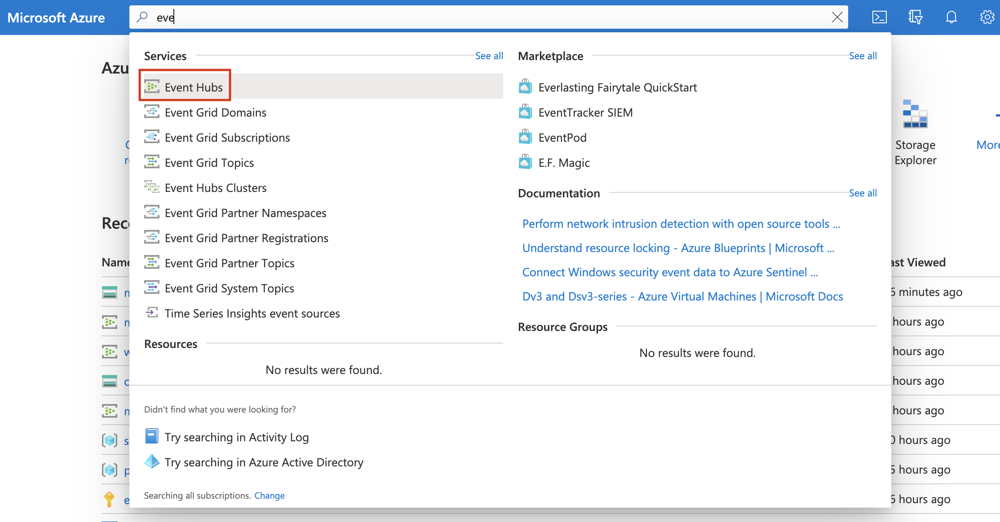

Monitor Microsoft Azureedit
In this tutorial, you’ll learn how to monitor your Microsoft Azure deployments using Elastic Observability: Logs and Metrics.
What you’ll learnedit
You’ll learn how to:
- Set up an Azure service principal.
- Ingest metrics using the Metricbeat Azure module and view those metrics in Kibana.
- Export Azure activity logs through Event Hubs.
- Ingest logs using the Filebeat Azure module and view those logs in Kibana.
Before you beginedit
Create a deployment using our hosted Elasticsearch Service on Elastic Cloud. The deployment includes an Elasticsearch cluster for storing and searching your data, and Kibana for visualizing and managing your data. For more information, see Spin up the Elastic Stack.
Step 1: Create an Azure service principal and set permissionsedit
The Azure Monitor REST API allows you to get insights into your Azure resources using different operations. To access the Azure Monitor REST API you need to use the Azure Resource Manager authentication model. Therefore, all requests must be authenticated with Azure Active Directory (Azure AD). You can create the service principal using the Azure portal or Azure PowerShell. Then, you need to grant access permission, which is detailed here. This tutorial uses the Azure portal.
Create an Azure service principaledit
-
Go to the Azure Management Portal. Search and click on Azure Active Directory.

-
Click on App registrations in the navigation pane of the selected Active Directory and then click on New registration.

-
Type the name of your application (this tutorial uses
monitor-azure) and click on Register (leave all the other options with the default value).
Copy the Application (client) ID, and save it for future reference. This id is required to configure Metricbeat to connect to your Azure account.
-
Click on Certificates & secrets. Then, click on New client secret to create a new security key.

-
Type a key description and select a key duration in the expire list. Click on Add to create a client secret. The next page will display the key value under the Value field. Copy the secret and save it (along with your Client ID) for future reference.
This is your only chance to copy this value. You can’t retrieve the key value after you leave the page.
Grant access permission for your service principaledit
After creating the Azure service principal you need to grant it the correct
permission. You need Reader permission to configure Metricbeat to monitor
your services.
-
On Azure Portal, search and click on Subscriptions.

- In the Subscriptions page, click on your subscription.
- Click on Access control (IAM) in the subscription navigation pane.
- Click on Add and select Add role assignment.
- Select the Reader role.
-
In the Select field, type the description name of the configured service principal (
monitor-azure).
- Select the application and click on save to grant the service principal access to your subscription.
Step 2: Install and configure Metricbeatedit
This tutorial assumes the Elastic cluster is already running. Make sure you have your cloud ID and your credentials on hand.
To monitor Microsoft Azure using the Elastic Stack, you need two main components: an Elastic deployment to store and analyze the data and an agent to collect and ship the data.
Two agents can be used to monitor Azure: Metricbeat is used to monitor metrics, and Filebeat to monitor logs. You can run the agents on any machine. This tutorial uses a small Azure instance, B2s (2 vCPUs, 4 GB memory), with an Ubuntu distribution.
Install Metricbeatedit
Download and install Metricbeat.
curl -L -O https://artifacts.elastic.co/downloads/beats/metricbeat/metricbeat-7.12.1-amd64.deb sudo dpkg -i metricbeat-7.12.1-amd64.deb
curl -L -O https://artifacts.elastic.co/downloads/beats/metricbeat/metricbeat-7.12.1-x86_64.rpm sudo rpm -vi metricbeat-7.12.1-x86_64.rpm
curl -L -O https://artifacts.elastic.co/downloads/beats/metricbeat/metricbeat-7.12.1-darwin-x86_64.tar.gz tar xzvf metricbeat-7.12.1-darwin-x86_64.tar.gz
brew tap elastic/tap brew install elastic/tap/metricbeat-full
This command installs the most recently released default distribution of
Metricbeat. To install the OSS distribution, specify
elastic/tap/metricbeat-oss.
curl -L -O https://artifacts.elastic.co/downloads/beats/metricbeat/metricbeat-7.12.1-linux-x86_64.tar.gz tar xzvf metricbeat-7.12.1-linux-x86_64.tar.gz
- Download the Metricbeat Windows zip file from the downloads page.
-
Extract the contents of the zip file into
C:\Program Files. -
Rename the
metricbeat-<version>-windowsdirectory toMetricbeat. - Open a PowerShell prompt as an Administrator (right-click the PowerShell icon and select Run As Administrator).
-
From the PowerShell prompt, run the following commands to install Metricbeat as a Windows service:
PS > cd 'C:\Program Files\Metricbeat' PS C:\Program Files\Metricbeat> .\install-service-metricbeat.ps1
If script execution is disabled on your system, you need to set the
execution policy for the current session to allow the script to run. For
example:
PowerShell.exe -ExecutionPolicy UnRestricted -File .\install-service-metricbeat.ps1.
Set up assetsedit
Metricbeat comes with predefined assets for parsing, indexing, and visualizing your data. Run the following command to load these assets. It may take a few minutes.
./metricbeat setup -e -E 'cloud.id=YOUR_DEPLOYMENT_CLOUD_ID' -E 'cloud.auth=elastic:YOUR_SUPER_SECRET_PASS'
|
Substitute your Cloud ID and an administrator’s |
Setting up Metricbeat is an admin-level task that requires extra privileges. As a best practice, use an administrator role to set up, and a more restrictive role for event publishing (which you will do next).
Configure Metricbeat outputedit
Next, you are going to configure Metricbeat output to Elasticsearch Service.
-
Use the Metricbeat keystore to store secure settings. Store the Cloud ID in the keystore.
./metricbeat keystore create echo -n "<Your Deployment Cloud ID>" | ./metricbeat keystore add CLOUD_ID --stdin
-
To store metrics in Elasticsearch with minimal permissions, create an API key to send data from Metricbeat to Elasticsearch Service. Log into Kibana (you can do so from the Cloud Console without typing in any permissions) and select Management → Dev Tools. Send the following request:
POST /_security/api_key { "name": "metricbeat-monitor", "role_descriptors": { "metricbeat_writer": { "cluster": ["monitor", "read_ilm"], "index": [ { "names": ["metricbeat-*"], "privileges": ["view_index_metadata", "create_doc"] } ] } } } -
The response contains an
api_keyand anidfield, which can be stored in the Metricbeat keystore in the following format:id:api_key.echo -n "IhrJJHMB4JmIUAPLuM35:1GbfxhkMT8COBB4JWY3pvQ" | ./metricbeat keystore add ES_API_KEY --stdin
Make sure you specify the
-nparameter; otherwise, you will have painful debugging sessions due to adding a newline at the end of your API key. -
To see if both settings have been stored, run the following command:
./metricbeat keystore list
-
To configure Metricbeat to output to Elasticsearch Service, edit the
metricbeat.ymlconfiguration file. Add the following lines to the end of the file.cloud.id: ${CLOUD_ID} output.elasticsearch: api_key: ${ES_API_KEY} -
Finally, test if the configuration is working. If it is not working, verify if you used the right credentials and add them again.
./metricbeat test output
Now that the output is working, you are going to set up the input (Azure).
Step 3: Configure Metricbeat Azure moduleedit
To collect metrics from Microsoft Azure, use the Metricbeat Azure module. This module periodically fetches monitoring metrics from Microsoft Azure using the Azure Monitor REST API.
Extra Azure charges on metric queries my be generated by this module. Please see additional notes about metrics and costs for more details.
-
The azure module configuration needs three ids and one secret. Use the commands below to store each one of them in the keystore.
echo -n "<client_id>" | ./metricbeat keystore add AZURE_CLIENT_ID --stdin echo -n "<client_secret>" | ./metricbeat keystore add AZURE_CLIENT_SECRET --stdin echo -n "<tenant_id>" | ./metricbeat keystore add AZURE_TENANT_ID --stdin echo -n "<subscription_id>" | ./metricbeat keystore add AZURE_SUBSCRIPTION_ID --stdin
You can find the
tenant_idin the main Azure Active Directory page. You can find thesubscription_idin the main Subscriptions page. -
Enable the Azure module.
./metricbeat modules enable azure
-
Edit the
modules.d/azure.ymlfile to collectcompute_vmsmetrics.- module: azure metricsets: - compute_vm enabled: true period: 300s client_id: '${AZURE_CLIENT_ID:""}' client_secret: '${AZURE_CLIENT_SECRET:""}' tenant_id: '${AZURE_TENANT_ID:""}' subscription_id: '${AZURE_SUBSCRIPTION_ID:""}' refresh_list_interval: 600s
The
compute_vmmetricset is a predefined metricset that collects metrics from the virtual machines.Collects metrics every 5 minutes. The period for
compute_vmmetricset should be 300s or multiples of 300s.The unique identifier for the application (also known as Application ID, which you copied earlier).
The client/application secret/key (copied earlier).
The unique identifier of the Azure Active Directory instance.
The unique identifier for the azure subscription.
-
To check if Metricbeat can collect data, test the input by running the following command:
./metricbeat test modules azure
Metricbeat will print
compute_vmsmetrics to the terminal, if the setup is correct.If it returns a timeout error, try again. The
test modulestimeout is short. -
Edit the
modules.d/azure.ymlfile to also collectbillingmetrics. -
When the input and output are ready, start Metricbeat to collect the data.
./metricbeat -e
-
Finally, log into Kibana and open the [Metricbeat Azure] Compute VMs Overview dashboard.

The VM Available Memory visualization might be empty if you only have Linux VMs as discussed here.
You can also check the [Metricbeat Azure] Billing overview dashboard, even though it might take longer to collect data.

Step 4: Install and configure Filebeatedit
Now that Metricbeat is up and running, configure Filebeat to collect Azure logs.
Install Filebeatedit
Download and install Filebeat.
curl -L -O https://artifacts.elastic.co/downloads/beats/filebeat/filebeat-7.12.1-amd64.deb sudo dpkg -i filebeat-7.12.1-amd64.deb
curl -L -O https://artifacts.elastic.co/downloads/beats/filebeat/filebeat-7.12.1-x86_64.rpm sudo rpm -vi filebeat-7.12.1-x86_64.rpm
curl -L -O https://artifacts.elastic.co/downloads/beats/filebeat/filebeat-7.12.1-darwin-x86_64.tar.gz tar xzvf filebeat-7.12.1-darwin-x86_64.tar.gz
brew tap elastic/tap brew install elastic/tap/filebeat-full
This command installs the most recently released default distribution of
Filebeat. To install the OSS distribution, specify
elastic/tap/filebeat-oss.
curl -L -O https://artifacts.elastic.co/downloads/beats/filebeat/filebeat-7.12.1-linux-x86_64.tar.gz tar xzvf filebeat-7.12.1-linux-x86_64.tar.gz
- Download the Filebeat Windows zip file from the downloads page.
-
Extract the contents of the zip file into
C:\Program Files. -
Rename the
filebeat-<version>-windowsdirectory toFilebeat. - Open a PowerShell prompt as an Administrator (right-click the PowerShell icon and select Run As Administrator).
-
From the PowerShell prompt, run the following commands to install Filebeat as a Windows service:
PS > cd 'C:\Program Files\Filebeat' PS C:\Program Files\Filebeat> .\install-service-filebeat.ps1
If script execution is disabled on your system, you need to set the
execution policy for the current session to allow the script to run. For
example:
PowerShell.exe -ExecutionPolicy UnRestricted -File .\install-service-filebeat.ps1.
Set up assetsedit
Filebeat comes with predefined assets for parsing, indexing, and visualizing your data. Run the following command to load these assets. It may take a few minutes.
./filebeat setup -e -E 'cloud.id=YOUR_DEPLOYMENT_CLOUD_ID' -E 'cloud.auth=elastic:YOUR_SUPER_SECRET_PASS'
|
Substitute your Cloud ID and an administrator’s |
Setting up Filebeat is an admin-level task that requires extra privileges. As a best practice, use an administrator role to set up and a more restrictive role for event publishing (which you will do next).
Configure Filebeat outputedit
Next, you are going to configure Filebeat output to Elasticsearch Service.
-
Use the Filebeat keystore to store secure settings. Store the Cloud ID in the keystore.
./filebeat keystore create echo -n "<Your Deployment Cloud ID>" | ./filebeat keystore add CLOUD_ID --stdin
-
To store logs in Elasticsearch with minimal permissions, create an API key to send data from Filebeat to Elasticsearch Service. Log into Kibana (you can do so from the Cloud Console without typing in any permissions) and select Management → Dev Tools. Send the following request:
POST /_security/api_key { "name": "filebeat-monitor-gcp", "role_descriptors": { "filebeat_writer": { "cluster": [ "monitor", "read_ilm", "cluster:admin/ingest/pipeline/get", "cluster:admin/ingest/pipeline/put" ], "index": [ { "names": ["filebeat-*"], "privileges": ["view_index_metadata", "create_doc"] } ] } } }Filebeat needs extra cluster permissions to publish logs, which differs from the Metricbeat configuration. You can find more details here.
-
The response contains an
api_keyand anidfield, which can be stored in the Filebeat keystore in the following format:id:api_key.echo -n "IhrJJHMB4JmIUAPLuM35:1GbfxhkMT8COBB4JWY3pvQ" | ./filebeat keystore add ES_API_KEY --stdin
Make sure you specify the
-nparameter; otherwise, you will have painful debugging sessions due to adding a newline at the end of your API key. -
To see if both settings have been stored, run the following command:
./filebeat keystore list
-
To configure Filebeat to output to Elasticsearch Service, edit the
filebeat.ymlconfiguration file. Add the following lines to the end of the file.cloud.id: ${CLOUD_ID} output.elasticsearch: api_key: ${ES_API_KEY} -
Finally, test if the configuration is working. If it is not working, verify that you used the right credentials and, if necessary, add them again.
./filebeat test output
Now that the output is working, you are going to set up the input (Azure).
Step 5: Create an event hub and configure diagnostics settingsedit
To collect logs from Microsoft Azure, use the
Filebeat Azure module.
This module periodically fetches logs that have been forwarded to an Azure event
hub.
There are four available filesets: activitylogs, platformlogs, signinlogs,
and auditlogs. This tutorial covers the activitylogs fileset.
Create Event Hubs namespaceedit
You have different options to create an event hub, such as Azure portal or PowerShell. This tutorial uses PowerShell.
-
Open the Azure PowerShell:

-
Run the following command to create an Event Hub namespace:
New-AzEventHubNamespace -ResourceGroupName monitor-azure-resource-group ` -NamespaceName monitor-azure-namespace ` -Location northeurope
You can only stream logs to event hubs in the same region. Make sure to choose an appropriate region.
-
Create an event hub:
New-AzEventHub -ResourceGroupName monitor-azure-resource-group ` -NamespaceName monitor-azure-namespace ` -EventHubName monitor-azure-event-hub ` -MessageRetentionInDays 3 `
Adjust the
-MessageRetentionInDaysvalue to your needs. This tutorial uses the default value suggested in the Azure quick start.
Configure activity logs to stream to the event hubedit
-
Navigate to Activity log.

-
Click on Diagnostics settings.

- Click on Add diagnostic setting.
-
Configure it and click on Save.

Select the log categories that you want. Select stream to an event hub and make sure to configure the correct namespace event hub.
Step 6: Configure Filebeat Azure moduleedit
There are 2 configuration values that you need to get from the Azure portal:
connection_string and storage_account_key.
Add the connection_string to the keystoreedit
-
Navigate to Event Hubs.
 -
Click on the created namespace (
monitor-azure-namespace). -
Click on shared policies and then on the
RootManageSharedAccessKeypolicy. -
Copy the
Connection string–primary keyvalue and add it to thekeystore.
echo -n "<Your Connection string-primary key>" | ./filebeat keystore add AZURE_CONNECTION_STRING --stdin
Add storage_account_key to the keystoreedit
A Blob Storage account is required in order to store/retrieve/update the offset or state of the eventhub messages. This means that after stopping the Filebeat azure module it can start back up at the spot that it stopped processing messages.
-
Create a storage account. (You can also use an existing one.)
New-AzStorageAccount -ResourceGroupName monitor-azure-resource-group ` -Name monitorazurestorage ` -Location northeurope ` -SkuName Standard_ZRS ` -Kind StorageV2
-
Navigate to Storage accounts.

-
Click on the created storage account and then on Access keys.

-
Click on Show keys and copy one of the keys.

-
Add the
storage_account_keyto thekeystore.echo -n "<Your Storage account key>" | ./filebeat keystore add AZURE_STORAGE_KEY --stdin
Configure Filebeat Azure moduleedit
-
Enable the Filebeat Azure module.
./filebeat modules enable azure
-
Edit the
modules.d/azure.ymlfile with the following configurations.- module: azure # All logs activitylogs: enabled: true var: eventhub: "monitor-azure-event-hub" consumer_group: "$Default" connection_string: "${AZURE_CONNECTION_STRING}" storage_account: "monitorazurestorage" storage_account_key: "${AZURE_STORAGE_KEY}"Collects logs from the
monitor-azure-event-hubevent hub.Uses the default consumer group.
Connects using the configured connection string.
Persists the state of the eventhub messages to the
monitorazurestoragestorage account.Uses the configured key to authenticate to the storage account.
You cannot remove any of the other filesets from the configuration file. You must have them in the config file and disabled.
-
Start Filebeat to collect the logs.
./filebeat -e
-
Finally, log into Kibana and open the [Filebeat Azure] Cloud Overview dashboard.